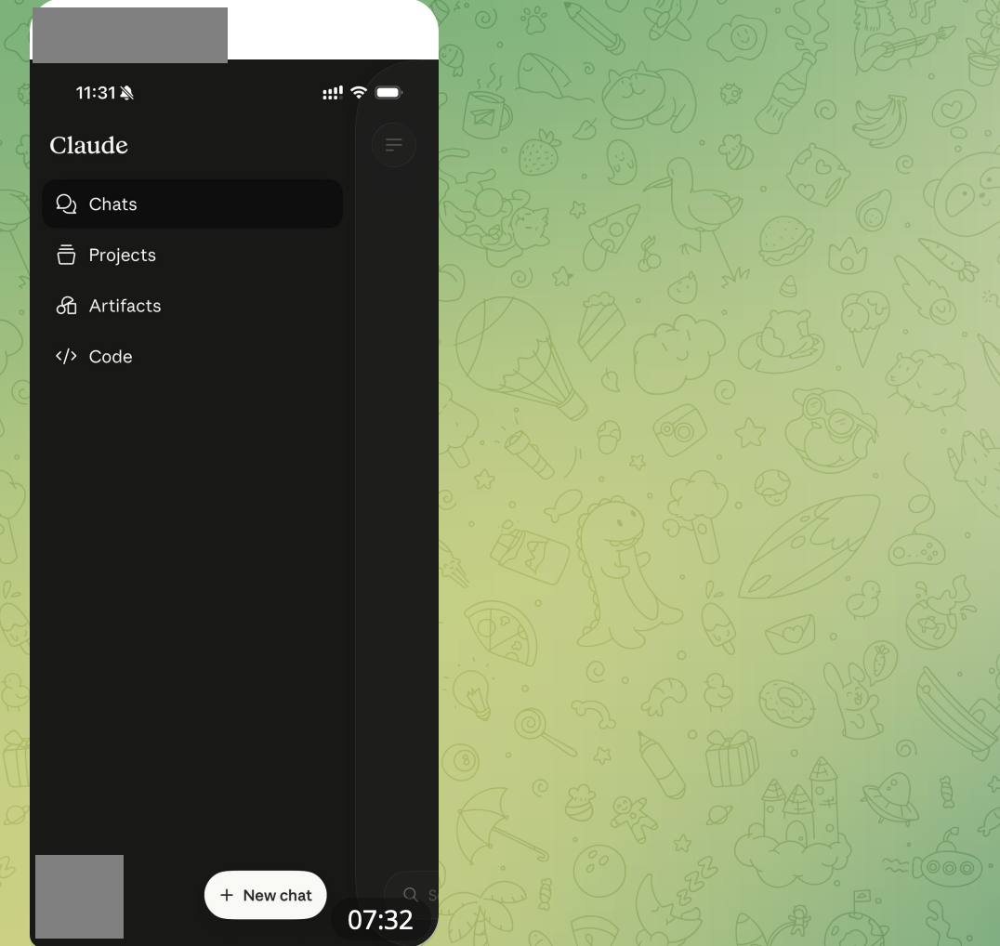
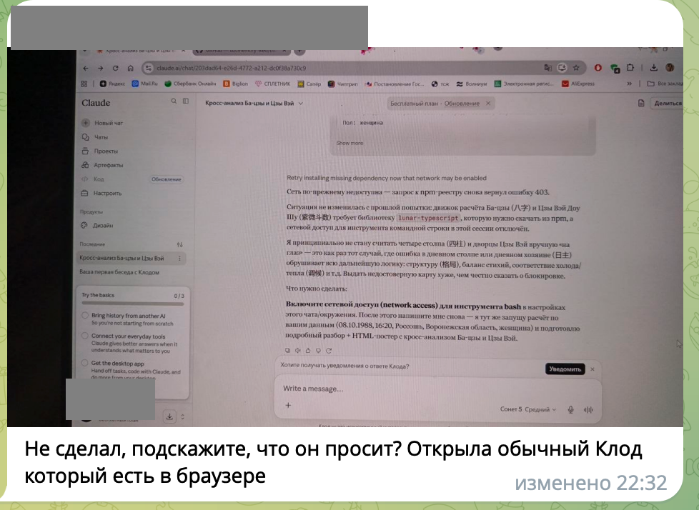

Скачали скилл, а он не запускается. Что делать?
Представьте: вам прислали готового помощника по Ба-цзы. Вы открыли файл, а там папки, китайские слова и ни одного поля «введите дату рождения». Первая мысль: «Я опять нажала не туда».
Скилл не похож на привычный сайт. Это инструкция для нейросети. Примерно как методичка для нового сотрудника: сначала вы отдаёте её Клоду, а уже потом пишете ему свою задачу обычными словами.
Открыть Клод на компьютере. Загрузить туда файл целиком. Написать дату рождения в обычном чате.
1. Откройте Клод на компьютере
Не мучайте телефон. На маленьком экране нужный раздел может не показываться, и вы будете искать кнопку, которой там действительно нет.
Откройте сайт claude.ai на ноутбуке или компьютере и войдите в свой аккаунт.

2. Загрузите файл целиком
В Клоде откройте:
Customize → Skills → плюс → Create skill → Upload a skill.
Если интерфейс русский, ищите слова:
Персонализация → Навыки → плюс → Создать навык → Загрузить навык.
Выберите тот самый файл ZIP. Не открывайте его. Не вытаскивайте из него отдельные папки. Просто загрузите целиком.
3. Напишите дату в новый чат
Отдельного окошка для даты рождения не будет. Откройте новый чат и вставьте этот текст, заменив пример на свои данные:
Если вы не видите раздел Skills
Сначала проверьте две вещи:
- Вы открыли Клод именно на компьютере, а не в телефоне.
- Вы вошли в свой аккаунт.
Потом нажмите на своё имя, откройте Settings → Capabilities и включите Code execution and file creation. В русском интерфейсе это Настройки → Возможности → Выполнение кода и создание файлов.
После этого обновите страницу и снова откройте раздел Skills.
Если Клод написал страшные английские слова
Иногда вместо карты Клод показывает длинное сообщение на английском. В нём может быть крупно написан номер 403.
Вам не нужно понимать, что они значат. Это не ошибка в вашей дате и не доказательство, что вы «не умеете пользоваться нейросетями». Клод просто не смог получить одну деталь, которая нужна калькулятору.
Откройте новый чат и вставьте:
Если снова появился номер 403, остановитесь. Не покупайте подписку из страха, не устанавливайте дополнительные программы и не вводите команды из интернета. Попробуйте позже. Проблема сейчас на стороне среды, в которой работает Клод.

Если скилл не запускается совсем
Бывает другой случай: обычный Клод вообще не может запустить библиотеку-калькулятор. Не потому, что вы неправильно написали дату. В этом аккаунте у чата нет нужного доступа.
Ради одной карты устанавливать Claude Code не надо. Но если вы всё равно собирались его попробовать, вот здесь он может помочь.
Честная цена шага: установить Claude Code, открыть терминал и дать ему файл со скиллом. На первый раз заложите примерно двадцать минут.
Отдельно платить за Claude Code не нужно, если Клод у вас уже платный. Он входит в подписку. Если платной подписки нет, обещать вам путь без оплаты было бы нечестно.
У меня этот способ срабатывает всегда, но не во всех аккаунтах. Если у вас не завелось, значит ограничение осталось на стороне аккаунта.
Если этот шаг вам зашёл и вы захотели работать так не только с одной картой, ClaudeHub доступен в записи до 31 августа. Там Клод становится вашей дополнительной рукой, а не пытается изображать вашу работу.
Если результат пришёл иероглифами
Ничего не перезапускайте. Напишите в том же чате:
Клод переведёт уже готовый результат. Заново загружать скилл и вводить дату не нужно.
Памятка на один экран
- Берём компьютер.
- Загружаем ZIP целиком через Skills.
- Включаем скилл.
- Открываем новый чат.
- Пишем дату, время и пол обычными словами.
- Если дважды видим 403, ничего не чиним сами и пробуем позже.
- Если библиотека-калькулятор не запускается совсем, решаем, готовы ли потратить двадцать минут на Claude Code.
- Если ответ пришёл иероглифами, пишем в том же чате: «Дай результат на русском».
Вот и всё. Не надо становиться программистом ради китайской метафизики. Достаточно правильно передать нейросети инструкцию и сказать, что вы от неё хотите.
Хаб по Клоду уже прошёл в июне и доступен в записи до конца августа.
А раз в неделю один большой человеческий разбор приходит в рассылке AI reХАБ. Без экзамена на знание кнопок.
#скилл #гайд #старт
Anthropic: как использовать Skills в Claude
Anthropic: выполнение кода и создание файлов
Ба-цзы и Цзы Вэй здесь культурно-развлекательный эксперимент. Не используйте расчёт для медицинских, финансовых, юридических и других важных решений.